The Oracle Speaks: Warren Buffett In His Own Words
1932841695From his office in Omaha, Nebraska, without even the benefit of a computer, Warren Buffett has racked up an investment record that far surpasses his counterparts on Wall Street—or anyone else in the world, for that matter. While traditionally stock exchanges have returned about 11 percent annually in the past half century, Buffett's investments have by nearly 29 percent a year, solidifying Buffett's conglomerate holding company, Berkshire Hathaway, as the eighth-largest business in the world and netting him $44 billion along the way.Despite this tremendous success, “the Oracle of Omaha” remains modest. He acknowledges that he has a unique ability to evaluate businesses, but he doesn’t feel entitled to the vast wealth that ability has earned him. Instead, he likes to say that he was born at the right place and time. This humility in the face of proven talent and innumerable wealth is part of what makes Buffett universally popular—he is one of the world's wealthiest men and yet he is still personable and relatable.
For the first time, the most thought-provoking and inspiring quotes from Buffett are now compiled in a single book. The Oracle Speaks: Warren Buffett in His Own Words is a comprehensive guidebook to the inner workings of the Berkshire Hathaway chairman. Hundreds of Buffett's best quotes, comprising thoughts on investing, Wall Street, business, politics, taxes, and life lessons, will provide the most intimate and direct look into the mind of a modern business icon and give readers enough counsel to last a lifetime.
Media outlets, financial advisers, politicians, and Americans from Main Street to Wall Street hang on every word Buffett speaks, hoping to gain valuable insight into Buffett's investments and successes. There is possibly no greater stamp of approval in the business world than to have Buffett invest in a company, and few leaders in the course of history have commanded such universally agreed-upon respect. Even beyond his business savvy, Buffett is influential as a progressive thinker and active philanthropist, having pledged to give most of his money to charity through the Bill and Melinda Gates Foundation as well as foundations run by his three children. It is this humility that consistently draws people to Buffett, and will draw people to The Oracle Speaks.
Most recently, inspired by Buffett's New York Times editorial in which he claimed he paid too little in taxes, President Barack Obama and Congress have named a series of tax reforms after Buffett. While the political implications have been controversial, Buffett has retained his reputation as an outspoken and successful business leader. The Oracle Speaks draws from decades of interviews, editorials, and annual shareholder reports, amassing the most complete outline of how Buffett believes a good business is run and a good life is led. It's advice that Buffett has successfully adhered to throughout his 80-plus years, and it is advice now available in the succinct, poignant, gift-friendly package of The Oracle Speaks.
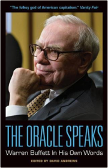
The Complete Guide to Starting and Running a Bookshop
Booksellers Association0907972144The Wolf of Wall Street: How Money Destroyed a Wall Street Superman
Jordan Belfort0340953756By day he made thousands of dollars a minute. By night he spent it as fast as he could, on drugs, sex, and international globe-trotting. From the binge that sunk a 170-foot motor yacht, crashed a Gulfstream jet, and ran up a $700,000 hotel tab, to the wife and kids who waited for him for at home, and the fast-talking, hard-partying young stockbrokers who called him king and did his bidding, here, in his own inimitable words, is the story of the ill-fated genius they called... THE WOLF OF WALL STREET
In the 1990s Jordan Belfort, former kingpin of the notorious investment firm Stratton Oakmont, became one of the most infamous names in American finance: a brilliant, conniving stock-chopper who led his merry mob on a wild ride out of the canyons of Wall Street and into a massive office on Long Island. In this astounding and hilarious tell-all autobiography, Belfort narrates a story of greed, power, and excess no one could invent - the story of an ordinary guy who went from hustling Italian ices at sixteen to making hundreds of millions. Until it all came crashing down.

From Worst to First: Behind the Scenes of Continental's Remarkable Comeback
Bethune, Gordon0471248355The numerous anecdotes alone are worth the price of the book . . . most readers will find themselves asking why everyone doesn't run a business as preached by the chief executive of Continental Airlines.-The Washington Post Book World. . . in an age where managing seems increasingly complicated, some of Bethune's prescriptions are refreshingly straightforward.-Business Week
From Worst to First outlines Gordon Bethune's triumphs . . . about the turnaround he's led at Continental, a perennial basket case that's become an industry darling.-The Atlanta Journal-Constitution
From Worst to First is [Gordon Bethune's] story of Continental Airlines' turnaround under his command . . . The blueprint has worked . . . Fortune magazine named Continental the company that has 'raised its overall marks more than any other in the 1990s.'-The Seattle Post-Intelligencer
All of Gordon Bethune's proceeds from this book will be donated to the We Care Trust, a nonprofit organization that assists Continental Airlines' employees and their families in times of need.
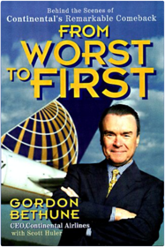
Buffettology: The Previously Unexplained Techniques That Have Made Warren Buffett The Worlds
Buffett, Mary, Clark, David068484821XBuilding from the ground up, Buffett chose wisely and picked his stocks with care, in turn amassing the huge fortune for which he is now famous. Mary Buffett, former daughter-in-law of this legendary financial genius and a successful businesswoman in her own right, has teamed up with noted Buffettologist David Clark to create Buffettology, a one-of-a-kind investment guide that explains the winning strategies of the master.-Learn how to approach investing the way Buffett does, based on the authors' firsthand knowledge of the secrets that have made Buffett the world's second wealthiest man
-Use Buffett's proven method of investing in stocks that will continue to grow over time

The Tao of Warren Buffett
Buffett, Mary1847390528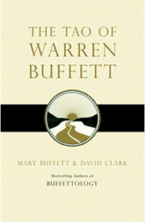
Warren Buffett and the Art of Stock Arbitrage: Proven Strategies for Arbitrage and Other Special Investment Situations
Buffett, Mary, Clark, David1439198829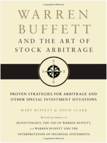
Keys to the Vault: Lessons From the Pros on Raising Money and Igniting Your Business
Keith J. Cunningham0977723607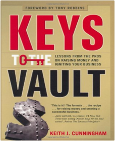
Narrative and Numbers: The Value of Stories in Business
Aswath Damodaran9353024536How can a company that has never turned a profit have a multi-billion dollar valuation? Why do some start-ups attract large investments while others do not? Aswath Damodaran, finance professor and experienced investor,argues that the power of story drives corporate value, adding substance to numbers and persuading even cautious investors to take risks.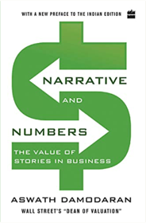
Common Stocks and Uncommon Profits and Other Writings
Fisher, Philip A.0471445509Widely respected and admired, Philip Fisher is among the most influential investors of all time. His investment philosophies, introduced almost forty years ago, are not only studied and applied by today's financiers and investors, but are also regarded by many as gospel. This book is invaluable reading and has been since it was first published in 1958. The updated paperback retains the investment wisdom of the original edition and includes the perspectives of the author's son Ken Fisher, an investment guru in his own right in an expanded preface and introduction"I sought out Phil Fisher after reading his Common Stocks and Uncommon Profits...A thorough understanding of the business, obtained by using Phil's techniques...enables one to make intelligent investment commitments."

The Intelligent Investor: The Classic Text on Value Investing
Graham, Benjamin0060752610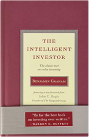
Flash Boys
Lewis, M.0141981032
The Big Short: Inside the Doomsday Machine
Lewis, Michael0141043539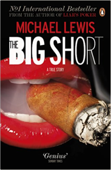
Buffett: The Making of an American Capitalist
Lowenstein, Roger0385484917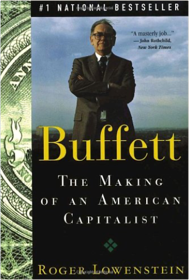
One Up On Wall Street: How To Use What You Already Know To Make Money In The Market
Lynch, Peter0743200403America’s most successful money manager tells how average investors can beat the pros by using what they know. According to Lynch, investment opportunities are everywhere. From the supermarket to the workplace, we encounter products and services all day long. By paying attention to the best ones, we can find companies in which to invest before the professional analysts discover them. When investors get in early, they can find the “tenbaggers,” the stocks that appreciate tenfold from the initial investment. A few tenbaggers will turn an average stock portfolio into a star performer.Lynch offers easy-to-follow advice for sorting out the long shots from the no-shots by reviewing a company’s financial statements and knowing which numbers really count. He offers guidelines for investing in cyclical, turnaround, and fast-growing companies.
As long as you invest for the long term, Lynch says, your portfolio can reward you. This timeless advice has made One Up on Wall Street a #1 bestseller and a classic book of investment know-how.

A Random Walk Down Wall Street: The Best and Latest Investment Advice Money Can Buy
Malkiel, Burton G.0393315290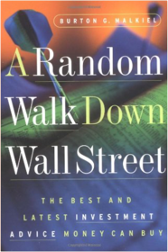
The Sages: Warren Buffett, George Soros, Paul Volcker, and the Maelstrom of Markets
Morris, Charles R.1586487523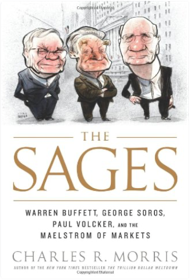
University of Berkshire Hathaway: 30 Years of Lessons Learned from Warren Buffett & Charlie Munger at the Annual Shareholders Meeting
Pecaut, Daniel099840621X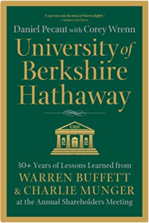
The End of Growth
Rubin, Jeff030736089X
In an Uncertain World: Tough Choices from Wall Street to Washington
Rubin, Robert, Weisberg, Jacob0375757309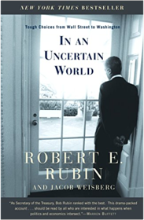
The Snowball: Warren Buffett and the Business of Life
Schroeder, Alice0553384619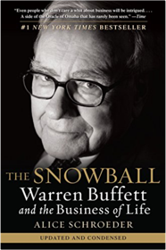